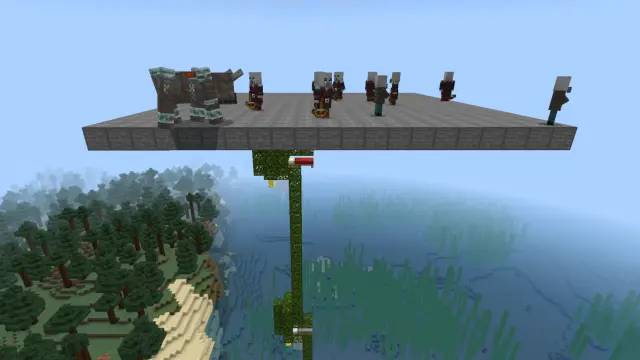
Raids have picked up a lot of visible new behaviour since 1.16, but the underlying architecture is largely unchanged. This article collects the latest code digging and test results in one place, and should help you understand how raids actually work.
The raid system is tightly bound to villages, so it helps to read this article first for the basic village terminology:
A raid is an ominous event that sends several waves of raiders against a village.
Drinking an Ominous Bottle gives the player Bad Omen. If the difficulty is not Peaceful and the village is not already raided, entering the village AABB converts Bad Omen into a 30 s Raid Omen effect. When that buff runs out, the player gains a raid trigger (triggers are part of the component system). Adding it refreshes the player's components, which fires the raid event, and the raid trigger system then looks for a village at the stored raid coordinates and creates the raid there.
That component system is riddled with bugs. Some actions, such as moving the village centre, make the bar start filling the moment you finish the potion; in reality the 30 s wind-up simply becomes a wind-down, so the total duration is unchanged.
The number of waves depends on difficulty: 3 on Easy, 5 on Normal and 7 on Hard. In Bedrock Edition it is unrelated to the Raid Omen's amplifier, and no extra waves are added.
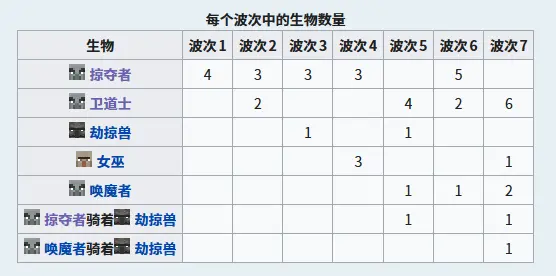
Analysis of Raid Event Spawn Areas in MCBE
Once the boss bar fills, the game tries to spawn the raid. Over 6 gt it works through six spawn areas in turn, looking for a spawn point. If all six fail, the raid ends immediately. The spawn point must be within 128 blocks of the player.
(This section draws on SAC's older article. It was written for 1.16, when the village AABB was different, so I have left the figures untouched but expanded the descriptions and corrected the errors.)
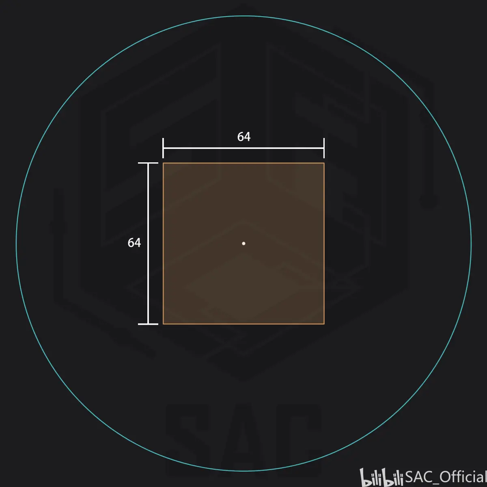
The figure is a top-down view of a manual village: literally one bed and one villager. The village has not been expanded (POIs can grow a village), so the centre sits in the middle of the bed's head. The orange village AABB measures 65×25×65 blocks; before 1.18.30 it was 64×24×64, running from the south-west of the bed's head to the north-west of its foot. The white dot is the village centre. The small pink dot is the player: blue is the raid spawn area, green is where the base point can form, and raiders can spawn inside the green area too.
For clarity the colours in the figures below are not shaded. They show presence, not probability density, and the real probabilities do vary.
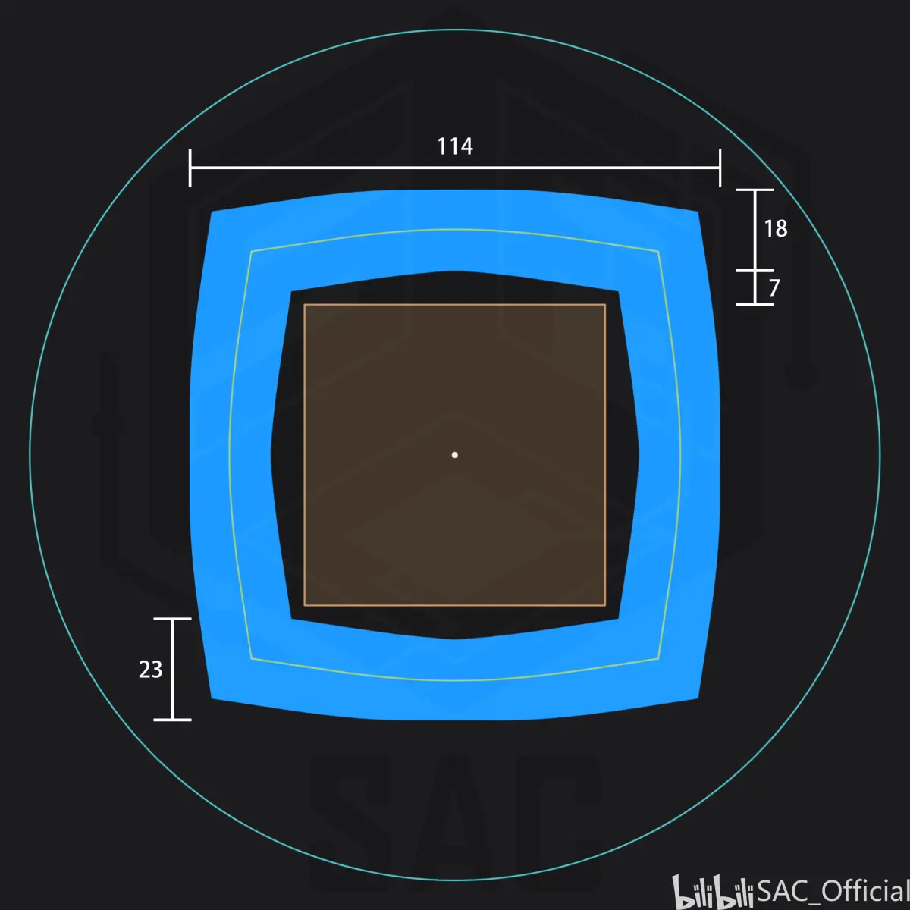
The first spawn area looks like the figure above. The game picks a uniformly random point on the village AABB boundary with a Y distance of ≤8 from the centre, then extends 16 blocks outwards from the centre through that point. This repeats up to 10 times until a base point is found. It then picks random points inside a 17×17×17 box around the base point, outside the village, and tests each for spawning, 10 times.
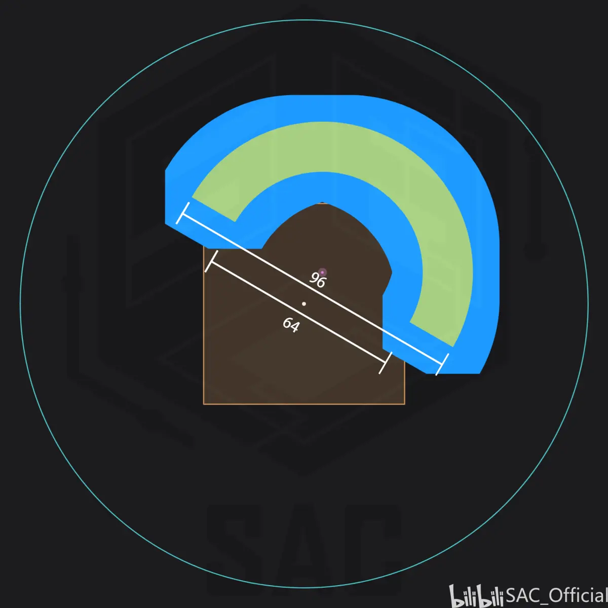
The second spawn area looks like the figure above. If the player is inside the village or within 16 blocks of the village AABB boundary, the game rolls a random radius . It then picks a uniformly random point on the semicircular arc centred on the player with that radius, facing outwards along the line from the village centre to the player, with a Y distance of ≤8 from the centre. This repeats up to 10 times until a base point is found. It then tests random points inside a 17×17×17 box around the base point, 10 times.
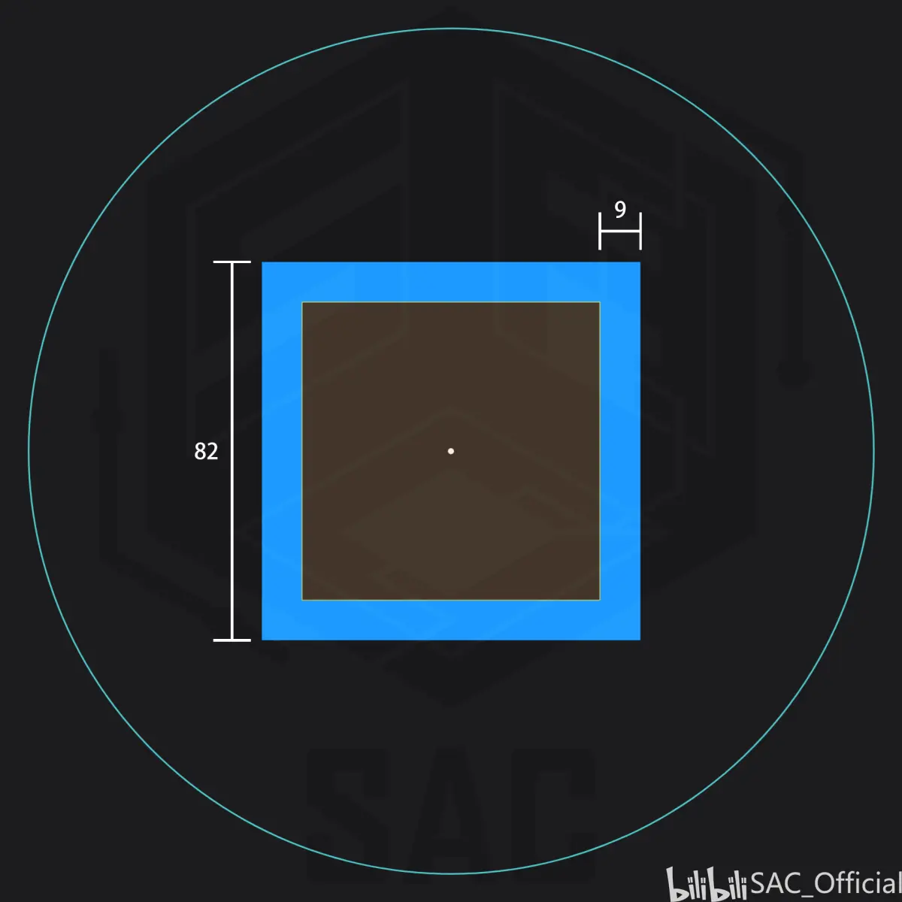
The third spawn area looks like the figure above. The game picks a uniformly random point on the village AABB boundary with a Y distance of ≤8 from the centre, repeating up to 10 times until a base point is found. It then tests random points inside a 17×17×17 box around the base point, outside the village, 10 times.
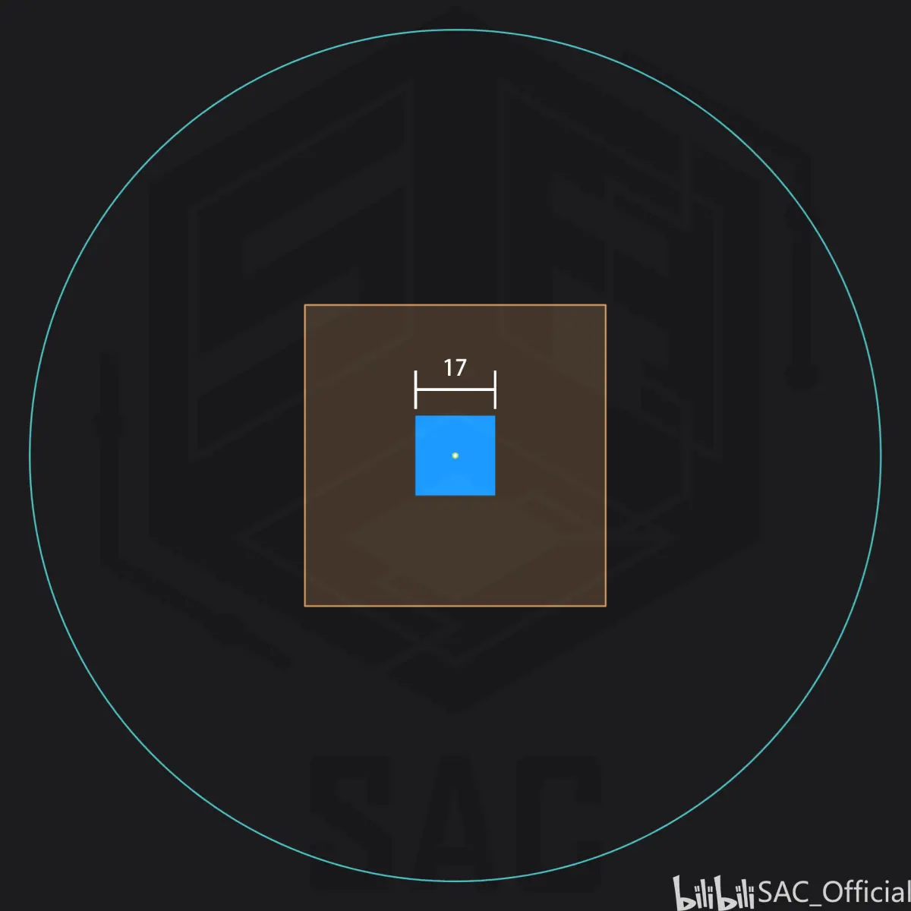
The fourth spawn area looks like the figure above. The game picks a uniformly random point on a circle of radius 0.5 around the village centre with a Y distance of ≤8 from the centre, repeating up to 10 times until a base point is found. It then tests random points inside a 17×17×17 box around the base point, inside the village, 10 times.
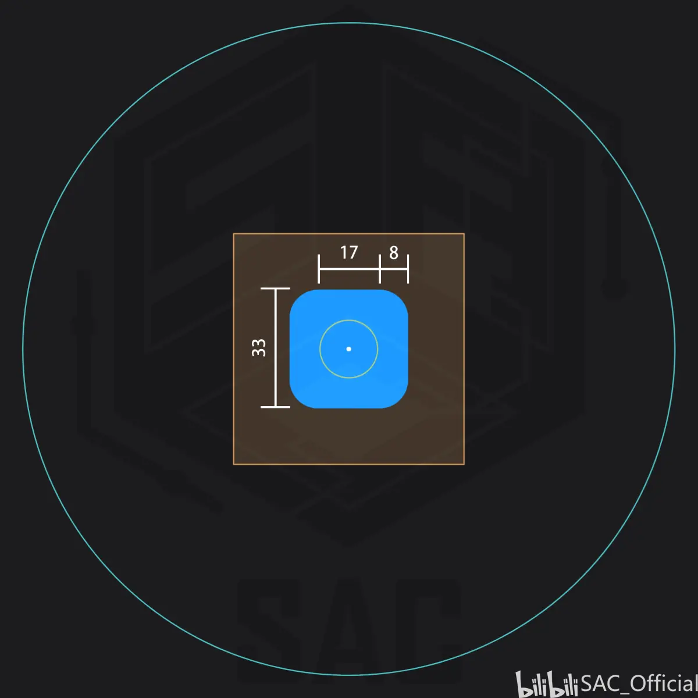
The fifth spawn area looks like the figure above. The game picks a uniformly random point on a circle of radius 8 around the village centre with a Y distance of ≤8 from the centre, repeating up to 10 times until a base point is found. It then tests random points inside a 17×17×17 box around the base point, inside the village, 10 times.
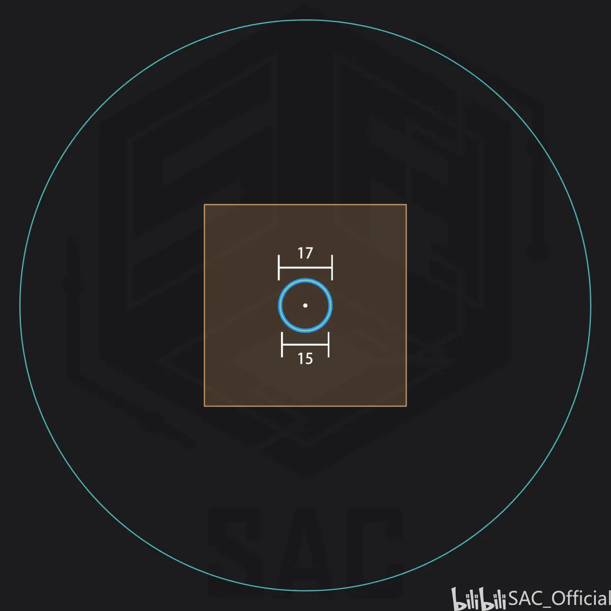
The sixth spawn area looks like the figure above. The game picks a uniformly random point on a circle of radius 8 around the village centre, and the base point must be a block with a collision box that is not open to the sky: leaves and glass do not count, but a block under leaves does. This repeats up to 10 times until a base point is found. It then takes the highest solid block at that position and tests it for spawning, 10 times.
Overall, the first five attempts look for a base point within ±8 of the village centre's Y coordinate, while the sixth searches down from the top of the world and then looks for a spawn block inside a 17×17×17 box around the base point. All six first pick a base point (up to 10 tries); once one is found they pick a spawn point (also up to 10 tries). If the 10 base-point tries all fail, the game moves on to the next wave, unless all six attempts fail.
The block checks for a raider spawn point are:
The block P under the raider must be a supporting block with a collision box. If a mob can stand on it, it qualifies, so fence gates, walls and even piston arms are fine, but leaves are not.
The two blocks above must be clear. P+1 must not be leaves, and P+2 must not be leaves, lava or water.
P+3 must not be a full solid block.
If a base point was found but every spawn-point attempt fails, the boss bar ends straight away.
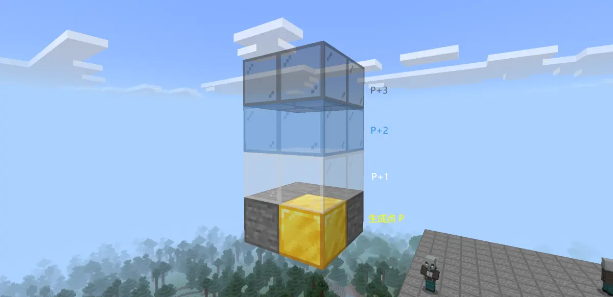
Base-point selection reuses the spawn-point checks, with one exception: the sixth attempt uses the heightmap, which reports the highest block at an XZ coordinate. That skips open-air leaves and glass entirely, and covering the base point with leaves or glass still passes selection. (In practice glass also counts as a spawn point, so the usual trick is to pin the base point with a covered block and build a small spawn platform on top.)
Minecraft: a beginner-friendly instant-kill emerald farm (NetEase compatible, 1.18.30+)
P+3 does not need checking either. The rule that the third block above a spawn point must be a full solid block looks like a bug: the real code was never designed that way. Credit to Mojang's programmers. Because the base point skips this check while the spawn point does not, a pocket only two blocks high will usually fail to spawn raiders and end the raid.
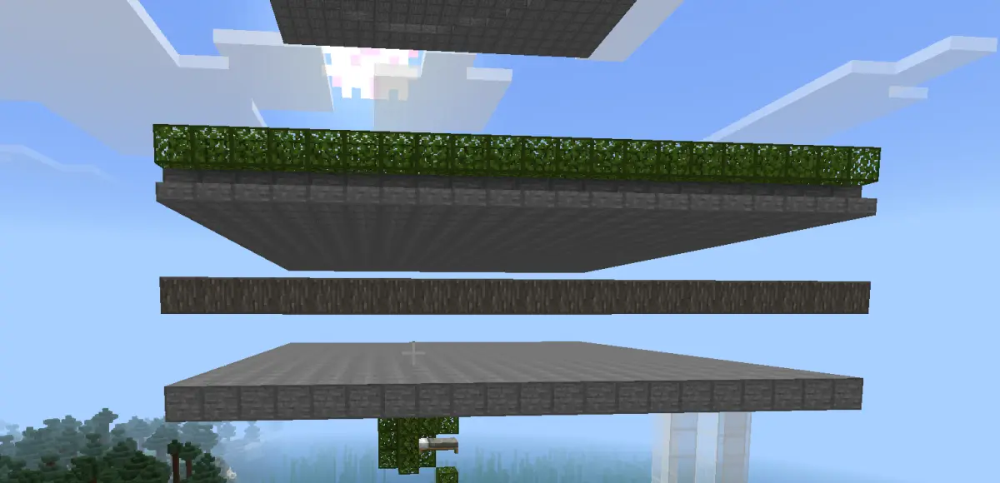
One more note: the code draws base points with uniform probability, but spawn points are then picked within of the base point, so the closer a spot is to the village centre, the more likely it is to be chosen.
The raid boss bar tracks the combined health of the wave. Raiders that join later are added to the total as long as they are inside the village AABB; mobs outside it are never counted, even if they join the raid, which looks like a bug.
When a wave ends the boss bar pauses for 2 s, then refills from left to right to show the next wave's arrival, which has a 15 s cooldown. Once the raid resolves as a victory, the bar shows “Raid — Victory” for 30 s. Drinking an Ominous Bottle during that window does nothing, and villagers with an unobstructed block above their heads set off fireworks.
If no raider can be spawned, the raid ends at once and the boss bar disappears.
The raid timer runs for 48,000 gt (40 minutes). If it is still going at 48,001 gt, the raid is aborted as a draw: the boss bar disappears and the player sees “A raid has expired”.
If no player is inside the village loading range, the village does not tick, so the raid is not loaded and the timer stops. A player AFK outside that range, farming emeralds from pillagers joining an outpost raid, will therefore never trigger the draw.
The raid loading range is the village loading range; the boss bar and spawning only run normally inside it. The village loading range is the village AABB expanded by simulation distance × 8 blocks on every side, in total:
Village loading range = village AABB + (simulation distance × 8) × 2
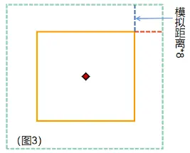
The boss-bar display range is the village AABB expanded by 32 blocks on every side. Its centre is normally the village centre, but moving the village centre after the raid starts does not move the boss bar.
At simulation distance 4, the boss-bar display range exactly matches the raid loading range.
Once a raid has spawned, raiders follow a join-the-nearest-village rule.
If a raider spawned for village A but sits closer to the centre of village B, it migrates out of village A as soon as it leaves A's raid-migration check range, and the boss bar updates.
The raid-migration check range is the village AABB expanded by d = 10 blocks on every side. A raider inside it cannot migrate to another village.
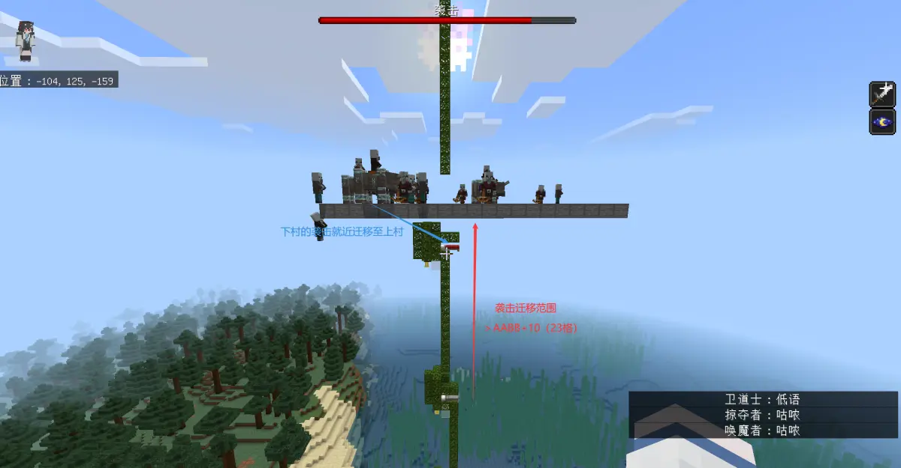
The mechanism above is usually exploited for stacked-village instant kills, but there is also a single-village variant.
Raiders count as hostile “residents” of a village, so the village removal mechanic applies to them. A raider that stays outside the raid remove range for more than 20 minutes is removed from the village and skips the boss bar's progress.
The raid remove range equals the village remove range. A raider that stays beyond it for 20 minutes straight is removed and cleared from the raid. The village remove range is the village AABB expanded by 48 blocks on every side.
If raiders spawn outside the remove range in the first place, for example by using the sixth spawn area to place them 61 blocks from the village centre (13+48), the boss bar empties instantly and the wave completes: an instant kill. Most likely a code bug…
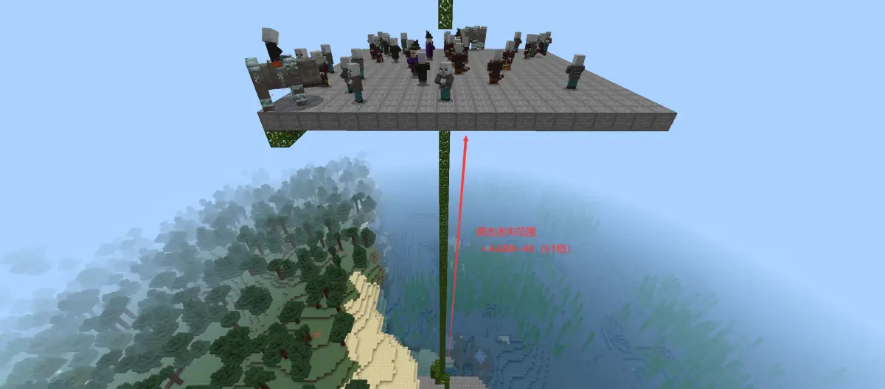
Another quirk: raiders spawned more than 48 blocks outside the village AABB only wipe the boss bar instantly once a world has been open for more than 20 minutes. Spawned at any point in the first 20 minutes, those pillagers are not instantly killed.
At the 20-minute mark, raiders that have never entered the raid remove range are cleared from the boss bar at once, while those that have stay on it. (The likely reason is that raiders beyond the remove range are never registered by the village, so they are treated as raiders remove from the wave.)
Mobs killed by a single-village instant kill behave like naturally spawned ones: beyond R > 32 blocks they despawn after a delay, and beyond R > 128 blocks instantly.
Raids accept joiners midway through: any raider not already in the current wave, which means every illager, witch and ravager, can join.
A joiner is added to the current wave when its collision box is within 16 blocks (Chebyshev distance) of the collision box of a raider already in the wave, provided that raider is inside the village that triggered the raid.
If the joiner is inside the village AABB, the boss bar's total health updates. If it is outside, it can still join but is not counted by the bar.
If the player is outside the village loading range, joining still works and does not consume the 40-minute timer.
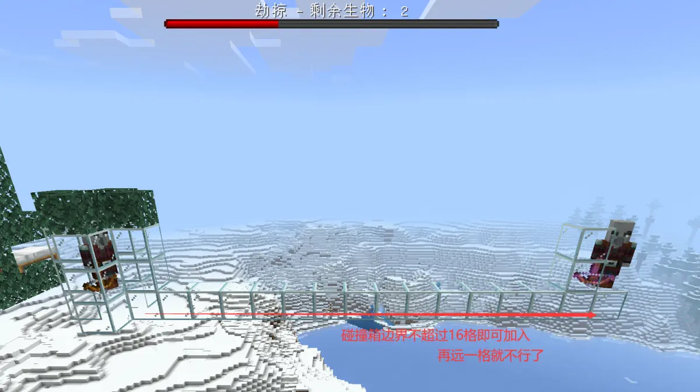
Pillagers spawn naturally at pillager outposts.
Beyond the pillagers that come with the outpost itself, those in the large watchtower spawn inside 1, 2 or 4 pillar-shaped hard-coded spawn areas (HSAs).
From 1.21.10.24 on, Mojang reworked the HSA internals, turning the bug into a mechanic with a toggle. That introduced a bug of its own: HSAs can now appear in sub-structures outside the watchtower, such as the iron golem cage, the allay cage and the wool tent. The HSA spawn positions in the woodpile and the scarecrow were squashed out of existence because they sit too low.
The number of HSA spawn points in a watchtower depends on the direction the structure generated in, which you can also infer from how many chunks it spans. The count changes with direction, and the positions are:
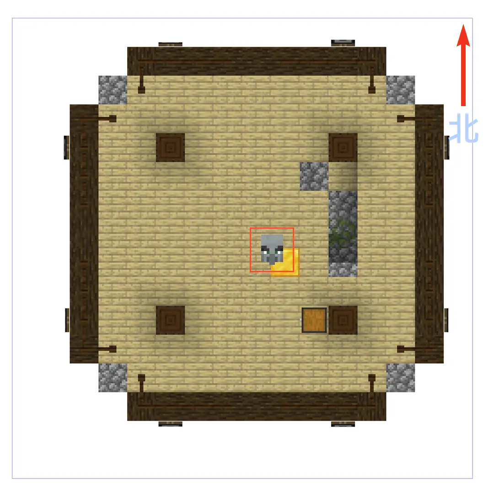
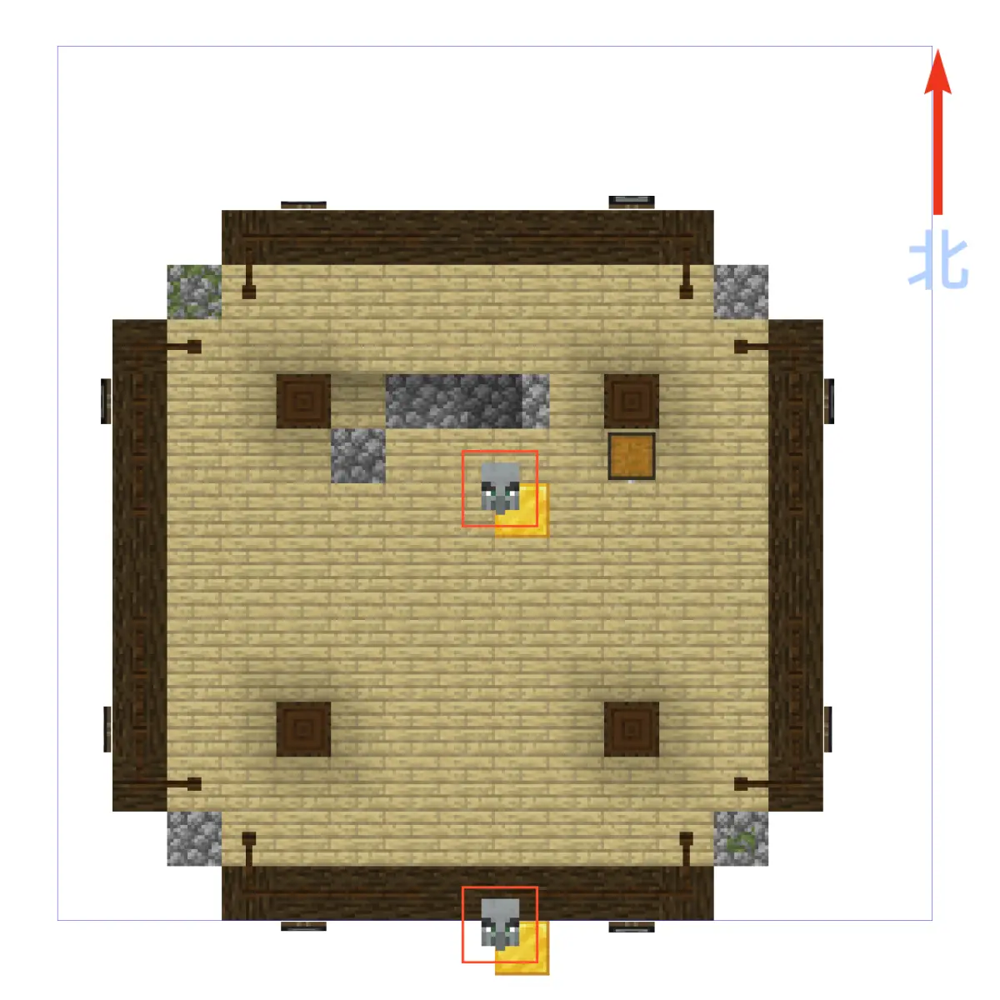
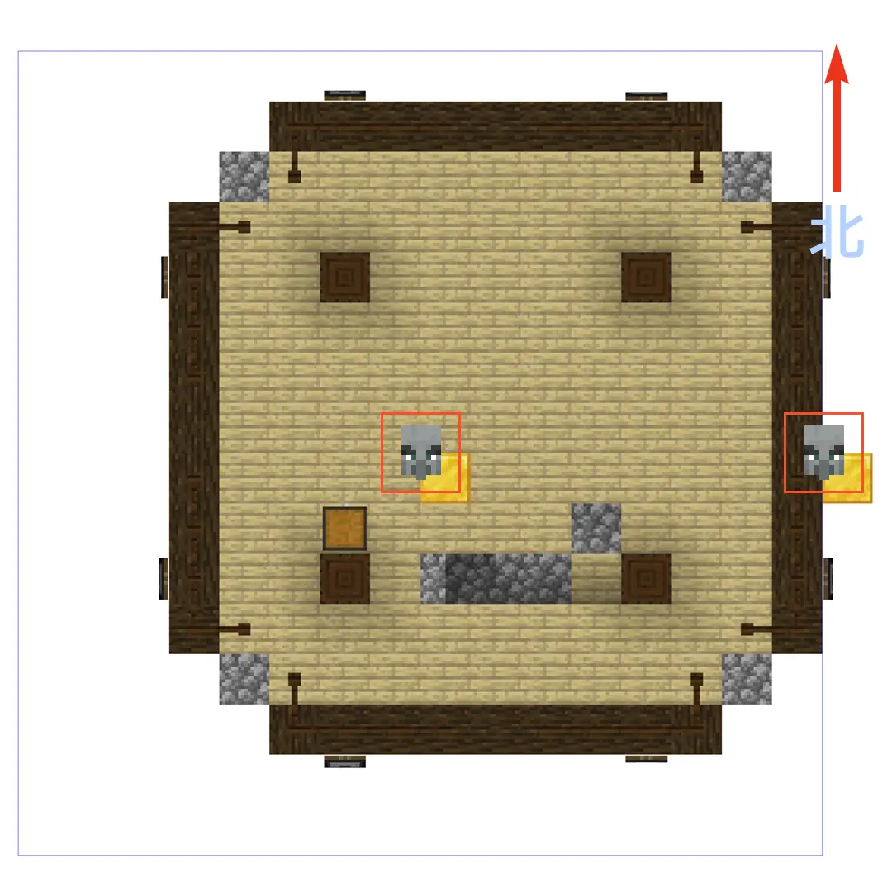
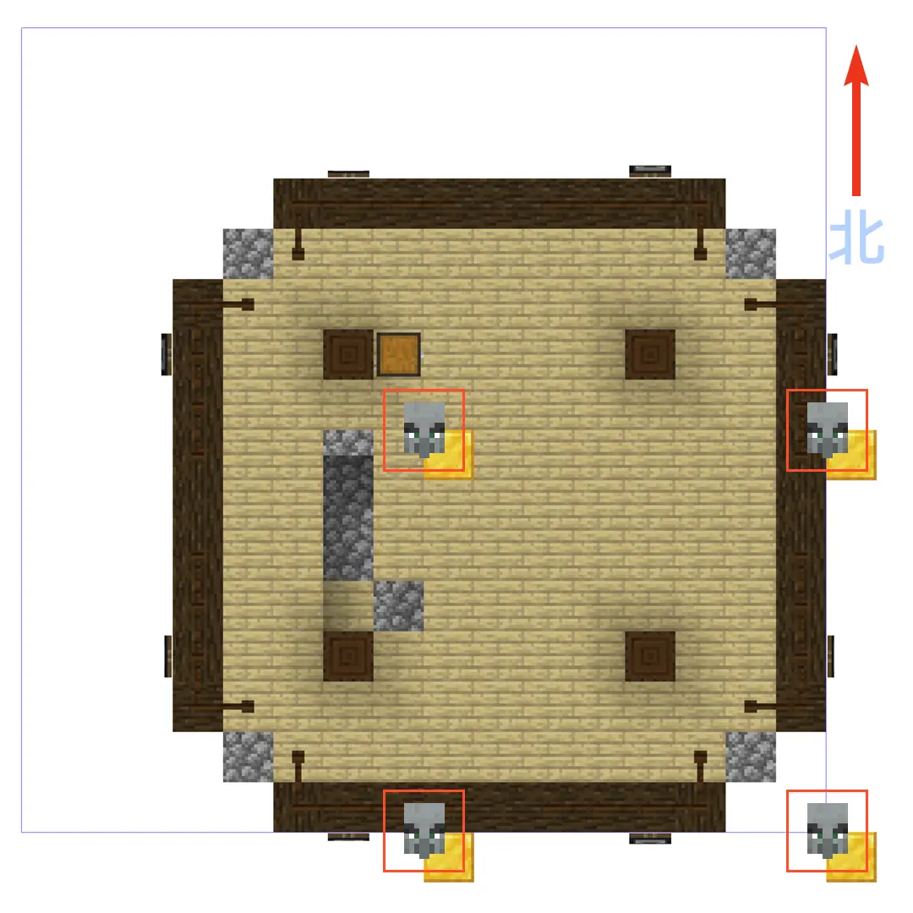
The figures above show the hard-coded pillager spawn positions. Gold blocks mark spawn points and blue lines mark chunk borders.
An HSA is a vertical column: it starts at the floor of the bottom entrance and rises 18 blocks, and pillagers can spawn anywhere inside it. The top three blocks that plugins such as coralfans report cannot actually spawn, because the code trims them off.
Besides the large watchtower, pillagers also spawn in the wooden cage and the wool tent. As with the watchtower, the number of spawn points depends on how the sub-structure straddles chunks: 1, 2 or 4.
The HSA sits at the centre of the sub-structure. If a chunk border cuts the sub-structure, the HSA splits into 2 or 4, depending on how many chunks it spans, each at the centre of the portion in its own chunk.
I will not cover the HSA positions of every sub-structure here. If you want the details, read:
MCBE 1.21.10.24 outposts sub-structures and their HSA
Once you have the right height, you can also trap a pillager against glass panes to pin down the position.
Structure generation attempts in Bedrock descend from cluster generation attempts, so the chunk must not be pure void, and not every block eligible for a generation attempt may be covered by lower slabs. Keep at least one layer of eligible blocks in the chunk. Cluster generation attempts can also spawn mobs outside the hard-coded areas.
Apart from illager patrols, pillagers spawn only at pillager outposts.
Pillagers spawn at the north-west corner of the highest spawnable position inside the HSA column. There is no light-level limit, and the position needs at least a 2×2×2 space. Any full solid block inside that space suppresses the spawn, while leaves, glass and the like do not block it, and the HSA must contain at least one air-type block (continues-air counts) to satisfy the spawn condition.
Normal pillagers and pillager captains spawn with equal (1:1) odds.
Pillager spawning is one big pile of bugs. Captains have a 50% spawn chance, yet the single-dimension farms we usually see are not nearly that full of them. The reason is the pillager mob cap: it is supposed to be 8 and independent of the monster, animal and aquatic caps, but the effective cap is 7 normal pillagers plus 1 captain.
The mob cap limits density. When a mob spawns, the 9×9 chunk area centred on its chunk must stay under the mob cap; this area is called the chunk density check range.
The funny part is that normal pillagers and captains steal each other's cap. If the first pillager spawned is a captain, at most 6 more normal pillagers can follow. If the first is a normal pillager, no captain will spawn at all.
Pillagers spawned by a raid also eat into the cap for natural outpost spawns, which is why some raid farms never produce a captain at the bottom.
So if a single normal pillager escapes around your outpost, that farm will never give you a captain again.
The same applies when building a raid-joining emerald farm: do not capture normal pillagers to recruit the raid, or captains will stop spawning.
One bug is a bug. A pile of bugs is working as intended. That is our studio, Bugjump.
Finally, my thanks to everyone who contributed to this article:
@藏青茶壶 — theory and several conclusions
@苏望安 — test verification and several conclusions
@8848yyds — source code support
@离殇之枫 @曲奇 — spawn-point block data
@_hhhxiao @莵道三室戸 @OEOTYAN — earlier in-depth work on raid mechanics
I hope this article helps.